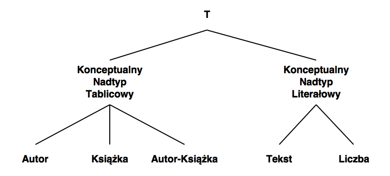
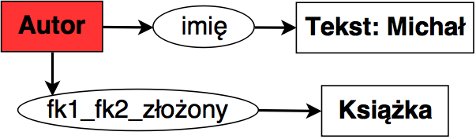

Implementacja systemu służącego do zadawania zapytań w postaci grafów pojęć
Motywacja
Głównym celem mojej pracy magisterskiej jest utworzenie programu umożliwiającego zadawanie zapytań do relacyjnych baz danych w postaci grafów konceptualnych.
W ramach pracy sformułowałem dwa główne zagadnienia badawcze:
- Modelowanie wiedzy zawartej w relacyjnej bazie danych przy pomocy grafów konceptualnych
- Zadawanie zapytań do relacyjnej bazy danych przy użyciu tak powstałego modelu konceptualnego
Grafy konceptualne

Klasyczny przykład grafu konceptualnego reprezentujący wiedzę zawartą w zdaniu John is going to Boston by bus.
Podstawowe fakty dotyczące grafów konceptualnych
- Modelowanie wiedzy o świecie
- Obserwacja świata oparta na dostrzeganiu faktów dotyczących istnienia obiektów
Konstrukcja grafu konceptualnego
Graf konceptualny składa się z wierzchołków dwóch rodzajów:
- Konceptów, czyli wierzchołków opisujących byty
- Relacji, czyli wierzchołków opisujących zależności pomiędzy bytami
Każda relacja jest połączona krawędziami skierowanymi z wierzchołkami konceptualnymi wchodzącymi w skład danej relacji.
Koncepty oraz relacje nazywane są wspólnie pojęciami.
Analizując graf konceptualny przedstawiony na rysunku możemy powiedzieć, że składa się on z następujących elementów
Prostokątnych wierzchołków opisujących koncepty:
- konkretny byt typu Osoba (ang. Person) o identyfikatorze John
- konkretny byt typu Miasto (ang. City) o identyfikatorze Boston
- niesprecyzowany byt typu Autobus (ang. Bus)
- niesprecyzowany byt typu Iść (ang. Go)
Owalnych wierzchołków opisujących relacje pomiędzy powyższymi bytami:
- relacja mówiąca o tym, że John jest Wykonawcą (ang. Agent) konceptu Iść
- relacja mówiąca o tym, że Autobus jest Narzędziem (ang. Instrument) konceptu Iść
- relacja mówiąca o tym, że Boston jest Celem (ang. Destination) konceptu Iść
Formy zapisu
Przydatną cechą grafów konceptualnych jest mnogość sposobów ich zapisu.
Postać graficzna jest formatem najbardziej przyjaznym dla czytelnika. Jednakże, istnieje również kilka zapisów liniowych, które są dużo przyjaźniejsze dla programów komputerowych pracujących z grafami.
CGIF
Formatem najczęsciej używanym do komunikacji pomiędzy programami wykorzystującymi grafy konceptualne jest format o nazwie Conceptual Graph Interchange Format.
- format podstawowy(ang. core syntax)
- format rozszerzony(ang. extended syntax)
1: 2: 3: 4: 5: 6: 7: 8: |
|
CLIF
Kolejnym z liniowych sposobów zapisu jest Common Logic Interchange Form, który został zdefiniowany w ramach tego samego projektu co CGIF.
1: 2: 3: |
|
Formuła logiczna
Ważną cechą wszystkich grafów konceptualnych jest ich mocne zakorzenienie w logice predykatów, dzięki czemu graf możemy zapisać w postaci formuły logicznej
\((((\exists\) x:Go)(\(\exists\) y:Person)((\(\exists\) z:City)((\(\exists\) w:Bus) (name(y,'John') \(\wedge\) name(z,'Boston') \(\wedge\) agnt(x,y) \(\wedge\) dest(x,z) \(\wedge\) inst(x,w))\)
Model grafu konceptualnego
W celu precyzyjnej definicji składni oraz semantyki grafu konceptualnego wprowadza się pojęcie modelu (zwanego czasami słownikiem lub wsparciem), który pozwala opisać syntaktyczne ograniczenia występujące pomiędzy pojęciami oraz dostarcza informacji na temat dziedziny, którą opisuje rozpatrywany graf.
Modelem nazywamy krotkę postaci \(M = ((T_C, \le_C), (T_R, \le_R), I)\) gdzie:
- zbiór \(T_C\) nazywamy zbiorem typów konceptów, natomiast relację \(\le_C\) - hierarchią konceptów.
- zbiór \(T_R\) nazywamy zbiorem typów relacji, natomiast relację \(\le_R\) - hierarchią relacji.
- zbiór \(I\) nazywamy zbiorem indywiduów.
Hierarchią nad zbiorem typów konceptów \(T_C\) nazywamy relację częsciowego porządku \(\le_C\) o następujących własnościach
Jeśli dla \(x,y \in T_C\) zachodzi \(x \le_C y\) to wówczas mówimy, że \(x\) jest podtypem \(y\), natomiast \(y\) jest nadtypem x. Dodatkowo jeśli \(x \neq_C y\) to mówimy o podtypie właściwym oraz nadtypie właściwym
W zbiorze \(T_C\) istnieją dwa obiekty wyróżnione:
- obiekt \(\top\) będący elementem maksymalnym porządku \(\le_C\) - oznacza to, że wszystkie koncepty należące do \(T_C\) są podtypem konceptu \(\top\). Element \(\top\) nazywamy typem uniwersalnym.
- obiekt \(\bot\) będący elementem minimalnym porządku \(\le_C\) - oznacza to, że wszystkie koncepty należące do \(T_C\) są nadtypem konceptu \(\bot\). Element \(\bot\) nazywamy typem absurdalnym.
Hierarchia nad zbiorem typów konceptów \(T_R = (T_R^1, \ldots , T_R^n)\), gdzie \(T_R^k\) jest podzbiorem typów relacji o arności równej \(k\), nazywamy relację częściowego porządku \(\le_R\) o następujących własnościach
Jeśli \(x \in T_R^n\), \(y \in T_R^m\) oraz \(n\neq m\) to wówczas \(x\) oraz \(y\) są nieporównywalne.
Jeśli dla \(x,y \in T_R^k\) zachodzi \(x \le_R y\) to wówczas mówimy, że \(x\) jest podtypem \(y\), natomiast \(y\) jest nadtypem x. Dodatkowo jeśli \(x \neq_R y\) to mówimy o podtypie właściwym oraz nadtypie właściwym
Dla każdego ze zbiorów \(T_R^k\), gdzie \(k=1,\ldots , n\) istnieją dwa obiekty wyróżnione:
- obiekt \(\top_k\) będący elementem maksymalnym porządku \(\le_C\) ograniczonego do podzbioru \(T_R^k\) - oznacza to, że wszystkie koncepty należące do \(T_R^k\) są podtypem konceptu \(\top_k\). Element \(\top_k\) nazywamy typem uniwersalnym o arności k.
- obiekt \(\bot_k\) będący elementem minimalnym porządku \(\le_C\) ograniczonego do podzbioru \(T_R^k\) - oznacza to, że wszystkie koncepty należące do \(T_R^k\) są nadtypem konceptu \(\bot_k\). Element \(bot_k\) nazywamy typem absurdalnym o arności k.
Skończony zbiór \(I\) składający się ze stałych wyrażeń nazywamy zbiorem indywiduów. Każdy element tego zbioru jest reprezentacją konkretnego obiektu należącego do rozpatrywanego uniwersum. Dodatkowo istnieje element \(*\) nazywany indywiduum uniwersalnym. Wówczas zbiór \(M=I\cup \{*\}\) jest uporządkowany w sposób następujący: element \(*\) jest większy niż każdy z elementów należących do \(I\), natomiast każde dwa elementy \(x,y\in I\) są nieporównywalne.
Model relacyjny
Model relacyjny jest to model organizacji danych zaprezentowany po raz pierwszy w 1970 roku przez Edgara Frank Codda w pracy pt. A Relational Model of Data for Large Shared Data Banks
Teoretyczną podstawą modelu relacyjnego jest matematyczna teoria mnogości.
Podstawowym pojęciem w modelu relacyjnym jest pojęcie relacji, za pomocą którego opisujemy zbiór rekordów (obiektów) o identycznej strukturze wewnętrznej. Obiekty te często przedstawia się w postaci tablicy.
Ustalony zbiór relacji nazywamy schematem bazy danych.
W modelu relacyjnym każda z relacji (prezentowana w postaci np. tabeli) jest reprezentowana za pomocą trzech parametrów:
- Nazwa - opisuje danę relację, musi być unikalna w ramach schematu bazy danych.
- Nagłówek - zbiór artybutów opisujących rekordy wchodzące w skład relacji. Pojedynczy atrybut jest parą składającą się z nazwy oraz typu danego atrybutu.
- Zawartość - zbiór krotek, gdzie pojedyncza krotka opisuje zależności pomiędzy danymi powiązanymi z poszczególnymi atrybutami (np. autorem książki o danym tytule jest osoba o podanym imieniu oraz nazwisku).
Klucz główny
Każda relacja posiada przypisany klucz główny, za pomocą którego możliwa jest jednoznaczna identyfikacja dowolnej z krotek wchodzących w skład danej relacji. Klucz główny może być przedstawiony jako kombinacja kilku atrybutów opisujących daną relację. Jednak często spotykaną sytuacją jest klucz główny składający się z jednego atrybutu (np. w przypadku relacji opisującej książki kluczem głównym może być atrybut będący numerem ISBN).
Klucz obcy
Pojęciem pokrewnym do klucza głównego jest klucz obcy. Służy on do wskazywania zależności pomiędzy danymi reprezentującymi różne relacje. Klucze w modelu relacyjnym służą m.in. do sprawdzania spójności danych w bazie.
ALgebra relacyjna
Kolejnym ważnym elementem modelu relacyjnego jest zbiór operacji służących do manipulacji oraz przeszukiwania danych. Najczęściej zbiór tych operacji opisuje się przy pomocy algebry relacyjnej.
Analogie pomiędzy grafami konceptualnymi a modelem relacyjnym
Przed przystąpieniem do głębszej analizy należy spojrzeć na model relacyjny oraz grafy konceptualne z szerszej perspektywy co pozwoli zaobserwować szereg analogii istniejących pomiędzy nimi.
Zarówno model relacyjny jak i grafy konceptualne:
- Mogą być wykorzystywane do modelowania wiedzy o świecie.
- Posiadają podstawowe, niepodzielne jednostki wiedzy.
- Grupują wspomniane jednostki wiedzy poprzez nakładanie warunków na ich strukturę wewnętrzną.
- Umożliwiają wykonywanie szeregu operacji mających na celu manipulacje danymi.
Generowanie modelu grafów konceptualnych ze schematu relacyjnej bazy danych
W ramach niniejszej pracy magisterskiej wprowadziłem szereg pojęć rozszerzających teorię grafów konceptualnych. Pojęcia te są bezpośrednio powiązane z modelem relacyjnym, i umożliwiają one łatwiejszy opis opracowanej przeze mnie metody.
Konceptualny typ tablicowy
Przyjmijmy, że \(r\) jest instancją schematu relacji \(R=\{A_1,\ldots,A_n\}\). Dodatkowo niech \(r\) składa się ze skończonego zbioru krotek oznaczonego przez \(k\). Wówczas możemy stworzyć Konceptualny Typ Tablicowy \(T\) o następujących własnościach:
- Typ \(T_r\) modeluje ten sam typ obiektów co relacja \(r\).
- Z typem \(T_r\) powiązany jest zbiór indywiduów wyznaczony przez zbiór obiektów \(k\) tzn. każdy obiekt z \(k\) ma typ \(T_r\).
Konceptualny Nadtyp Tablicowy
Konceptualnym Nadtypem Tablicowym nazywamy specjalny typ wchodzący w skład zbioru typów konceptualnych wyekstrahowanych z danej bazy danych, który posiada następujące właściwości:
- Dla każdego typu konceptualnego wchodzącego w skład hierarchii konceptów zachodzi następujący warunek - typ konceptualny \(T\) jest podtypem Konceptualnego Nadtypu Tablicowego wtedy i tylko wtedy, gdy typ \(T\) jest Konceptualnym Typem Tablicowym wyekstrahowanym z relacji wchodzącej w skład bazy danych.
Konceptualny Typ Liczbowy
Konceptualnym Typem Liczbowym nazywamy typ opisujący liczby, zarówno całkowite jak i rzeczywiste mogące zostać przedstawione w ramach danej bazy danych.
Konceptualny Typ Napisowy
Konceptualnym Typem Napisowym nazywamy typ opisujący napisy mogące zostać przedstawione w ramach danej bazy danych.
Konceptualny Nadtyp Literałowy
Konceptualnym Nadtypem Literałowym nazywamy specjalny typ \(L\) wchodzący w skład zbioru typów konceptualnych wyekstrahowanych z danej bazy danych, który jest nadtypem Konceptualnego Typu Liczbowego oraz Konceptualnego Typu Napisowego.

Relacyjny Typ Kolumnowy
Przyjmijmy, że \(r\) jest instancją schematu relacji \(R=\{A_1,\ldots,A_n\}\). Dodatkowo niech \(r\) składa się ze skończonego zbioru krotek oznaczonego przez \(k\). Wówczas z relacji \(r\) możemy wyekstrahować zbiór Relacyjnych Typów Kolumnowych \(T_a = \{t_1,\ldots,t_n\}\) o następujących własnościach:
- Typ relacyjny \(t_i\) modeluje \(i\)-ty atrybut relacji \(r\).
- Typ relacyjny \(t_i\) posiada sygnaturę postaci \(t_i(K_r,L_i)\) gdzie \(K_r\) jest Konceptualnym Typem Tablicowym wyekstrahowanym z relacji \(r\), natomiast \(L_i\) jest wyróżnionym typem literałowym wyznaczonym przez domenę atrybutu \(A_i\).
Relacyjny Nadtyp Kolumnowo-Tablicowy
Relacyjnym Nadtypem Kolumnowo-Tablicowym powiązanym z relacją \(r\) nazywamy specjalny typ relacyjny \(RNK_r\) o sygnaturze \(RNK_r(K_r,L)\) o następujących własnościach:
- \(K_r\) jest Konceptualnym Typem Tablicowym wyekstrahowanym z relacji \(r\).
- \(L\) jest Konceptualnym Nadtypem Literałowym.
- Każdy Relacyjny Typ Kolumnowy \(R_i\) wyekstrahowany z relacji \(r\) jest podtypem typu \(RNK_r\).
Relacyjny Nadtyp Kolumnowy
Relacyjnym Nadtypem Kolumnowym nazywamy specjalny typ relacyjny \(RNK\) o sygnaturze \(RNK(K,L)\) o następujących własnościach
- \(K\) jest Konceptualnym Nadtypem Tablicowym.
- \(L\) jest Konceptualnym Nadtypem Literałowym.
- Każdy Relacyjny Nadtyp Kolumnowo-Tablicowy \(RNK_r\) jest podtypem typu \(RNK_r\).
Relacyjny Prosty Typ Złączeniowy
Przyjmijmy, że \(r\) jest instancją schematu relacji \(R=\{A_1,\ldots,A_n\}\) oraz \(s\) jest instancją schematu relacji \(S=\{B_1,\ldots,B_m\}\). Dodatkowo niech \(fk=(C_1,\ldots,C_i)\) będzie kluczem obcym łączącym \(R\) oraz \(S\) tzn. \(\forall_{j:1\leq j \leq i} \exists_{l:1\leq l\leq n} A_l=C_j\) oraz \(\forall_{j: 1\leq j \leq i} \exists_{l: 1\leq l\leq m} B_l=C_j\). Wówczas Relacyjnym Prostym Typem Złączeniowym \(T\) nazywamy typ relacyjny o następujących własnościach:
Typ relacyjny \(T\) modeluje obiekty należące do \(r\) oraz \(s\) będące w relacji \(fk\).
Typ relacyjny \(T\) posiada sygnaturę postaci \(T(K_r,K_s)\) gdzie \(K_r\) jest Konceptualnym Typem Tablicowym wyekstrahowanym z relacji \(r\), natomiast \(K_s\) jest konceptualnym typem tablicowym wyekstrahowanym z relacji \(s\).
Relacyjny Złożony Typ Złączeniowy
Przyjmijmy, że \(R=\{r_1\ldots r_i\}\) jest zbiorem instancji schematów relacji \(T_R=\{R_1\ldots R_i\}\), oraz \(FK=\{fk_1\ldots fk_{i-1}\}\) jest zbiorem relacyjnych typów złączeniowych gdzie \(\forall k fk_k=(r_k, r_{k+1})\), czyli \(fk_k\) odpowiada złączeniu relacji \(r_k\) oraz \(r_{k+1}\).
Możemy wówczas wyróżnić zbiór \(X=\{x_1,\ldots,x_i\}\) gdzie \(x_j\) jest przecięciem obiektów należących do \(r_j\) będących jednocześnie w relacji \(fk_j\) oraz \(fk_{j+1}\).
Wówczas dla każdego podziału ciągu \((1,\ldots,i)\) na trzy podciągi \((1,\ldots,a),(a+1,\ldots,b),(b+1,\ldots,i)\), takiego że \(1\leq a\leq b\leq i-1\) możemy zdefiniować Złożony Typ Złączeniowy \(Z\) o następujących własnościach:
Typ relacyjny \(Z\) modeluje obiekty należące do \(\{x_1,\ldots,x_a,x_{b+1},\ldots,x_i\}\).
Typ relacyjny \(Z\) posiada sygnaturę postaci \(T(K_1,\ldots,K_a,K_{b+1},\ldots,K_i)\) gdzie \(K_i\) jest Konceptualnym Typem Tablicowym wyekstrahowanym z relacji \(r_i\)
Z typem relacyjnym \(Z\) związany jest zbiór argumentów ukrytych postaci \((K_{a+1},\ldots,K_{b})\) gdzie \(K_i\) jest Konceptualnym Typem Tablicowym wyekstrahowanym z relacji \(r_i\)

Opis algorytmu
Niech \(r\) będzie bazą danych o schemacie \(\mathbb{R}=(R_1,\ldots,R_n)\) gdzie \(R_i\) jest schematem \(i\)-tej relacji. Wówczas algorytm tłumaczący schemat \(\mathbb{R}\) na model grafu konceptualnego składa się z następujących kroków:
Inicjalizowane są puste zbiory \(C\), \(R\) oraz \(I\), gdzie \(C\) jest zbiorem typów konceptualnych, \(R\) jest zbiorem typów relacyjnych, natomiast \(I\) jest zbiorem indywiduów.
Dla każdej relacji \(r_i\in r\) o schemacie \(R_i(A_1,\ldots,A_k)\):
- Do zbioru \(C\) dodawany jest Konceptualny Typ Tablicowy utworzony z \(R_i\) zgodnie z definicją.
- Do zbioru \(I\) dodawane są obiekty powstałe z kluczy głównych krotek z \(r_i\).
-
Dla każdego atrybutu \(A_j, j\in 1,\ldots,k\):
- Do zbioru \(R\) dodawany jest Relacyjny Typ Kolumnowy utworzony z \(R_i\) oraz \(A_j\) zgodnie z definicją.
-
Dla każdego klucza obcego \(fk\) zdefiniowanego w ramach \(R_i\):
- Do zbioru \(R\) dodawany jest Relacyjny Prosty Typ Złączeniowy utworzony z \(R_i\) oraz tabeli wskazanej przez \(fk\).
Tworzony jest graf \(G=(V,E)\) gdzie \(V\) jest zbiorem wierzchołków odpowiadających {Konceptualnym Typom Tablicowym należącym do \(C\), natomiast \(E\) jest zbiorem krawędzi odpowiadających {Relacyjnym Prostym Typom Złączeniowym należącym do \(R\).
Dla każdej pary wierzchołków \(v_i,v_j\in V\):
- Tworzony jest zbiór \(P=(p_1,\ldots,p_m)\) złożony ze wszystkich ścieżek pomiędzy \(v_i\) oraz \(v_j\) w grafie \(G\).
- Dla każdej ścieżki \(p_i\) tworzony jest zbiór Relacyjnych Złożonych Typów Złączeniowych zgodnie z definicją.
- Do zbioru \(R\) dodawane są typy uzyskane w poprzednim kroku.
Zbiory \(C\) oraz \(R\) uzupełniane są typami literałowymi oraz nadtypami konceptualnymi opisanymi w ramach niniejszej pracy, jednocześnie budując relacje częściowego porządku \(\leq_C\) oraz \(\leq_R\) na tych zbiorach zgodnie z definicjami.
Zbiór \(I\) uzupełniany jest o klasy odpowiadające literałom.
Zwracany jest model grafu konceptualnego postaci \(M=((C,\leq_C),(R,\leq_R),I)\)
Zadawanie zapytania do relacyjnej bazy danych przy pomocy Konceptualnego grafu zapytania
Przed przystąpieniem do definicji Konceptualnego Grafu Zapytania należy zrozumieć, dlaczego normalny graf konceptualny nie jest wystarczający w przypadku zadawania zapytania.


Konceptualny Graf Zapytania
Konceptualnym Grafem Zapytania nazywamy krotkę postaci \((G,Q)\), gdzie \(G\) jest grafem konceptualnym, natomiast \(Q\) jest zbiorem złożonym z wyróżnionych wierzchołków konceptualnych oraz relacyjnych należących do \(G\).
Zbiór wyników
Niech \((G,Q)\) będzie Konceptualnym Grafem Zapytania opartym o model \(M=((C,\leq_C),(R,\leq_R),I)\) wyekstrahowanym z relacyjnej bazy danych. Wówczas dla każdego \(q \in Q\) Zbiorem Wyników \(R_q\) nazywamy zbiór elementów z \(I\) spełniających jeden z następujących warunków:
Jeśli \(q\) jest wierzchołkiem konceptualnym o typie \(T_q\in C\), to wówczas \(R_q\) składa się z obiektów typu \(T_q\), które są zgodne z grafem \(G\) tzn. spełniają wszystkie relacje opisane przez \(G\).
Jeśli \(q\) jest wierzchołkiem relacyjnym o typie z sygnaturą \(T_q(A_1,\ldots,A_n)\in R\) to wówczas \(R_q\) składa się z obiektów typu koniunkcyjnego \(T_q=A_1\wedge \ldots \wedge A_n\). Obiekty należące do \(R_q\) są zgodne z grafem \(G\) tzn. spełniają wszystkie relacje opisane przez \(G\).

Imię |
Nazwisko |
|---|---|
Michał |
Kijowski |
Michał |
Kwiatkowski |

Imię |
Nazwisko |
Tytuł |
ISBN |
|---|---|---|---|
Michał |
Kijowski |
Pierwsza książka |
1234 |
Michał |
Kijowski |
Druga książka |
5678 |
Michał |
Kwiatkowski |
Pierwsza książka |
1234 |
Opis algorytmu
Główna idea algorytmu opiera się na rekurencyjnym zawężaniu zbiorów obiektów zgodnych z danym Konceptualnym Grafem Zapytania.
Mamy dany model konceptualny \(M=((T_C, \leq_{C}),(T_R, \leq_{R}),I)\) oraz oparty na tym modelu Konceptualny Graf Zapytania \((G,Q)\), gdzie \(G=(C,R,E,lab,coref)\) oraz \(Q=(q_1,\ldots,q_n)\). Wówczas opisywany algorytm wykonuje następujące kroki:
Dla każdego wierzchołka konceptualnego \(c\in C\) o Konceptualnym Typie Tablicowym \(T_c\):
- Inicjalizowany jest zbiór \(I_c\) zawierający obiekty z \(I\) o typie \(T_c\).
Dla każdego wierzchołka relacyjnego \(r \in R\) o Relacyjnym Typie Kolumnowym:
- Niech \(c\) oznacza wierzchołek będący argumentem \(r\) o Konceptualnym Typie Tablicowym.
- Ze zbioru \(I_c\) elementów powiązanych z wierzchołkiem \(c\) usuwane są elementy, które nie spełniają relacji opisanej przez \(r\).
Dla każdego wierzchołka relacyjnego \(r\in R\) posiadającego Relacyjny Typ Złączeniowy:
-
Dla każdego argumentu relacji \(r\) postaci \(c_i\):
- Zbiór \(I_i\) elementów powiązanych z wierzchołkiem \(c_i\) ograniczany jest wyłącznie do elementów, które spełniają relację \(r\).
Dla każdego wierzchołka konceptualnego \(c\in Q\) o Konceptualnym Typie Tablicowym:
- Inicjalizowany jest zbiór \(W_c\) równy zbiorowi \(I_c\).
Dla każdego wierzchołka relacyjnego \(r \in Q\) o Relacyjnym Typie Kolumnowym:
- Niech \(c\) oznacza wierzchołek będący argumentem \(r\) o Konceptualnym Typie Złączeniowym.
- Inicjalizowany jest zbiór \(W_r\) równy zbiorowi \(I_c\) elementów powiązanych z wierzchołkiem \(c\).
Dla każdego wierzchołka relacyjnego \(r\in Q\) posiadającego Relacyjny Typ Złączeniowy:
- Niech \(c_1,\ldots,c_j,c_k,\ldots,c_n\) będą wierzchołkami będącymi argumentami relacji \(r\).
- Inicjalizowany jest zbiór \(W_r\) złożony z obiektów postaci \(a=(a_1,\ldots,a_j,a_K,\ldots,a_n)\) gdzie \(a_i\in I_i\) takich, że \(a\) spełnia relacje \(r\).
Zwracany jest zbiór Zbiorów Wyników \(W=\{W_i | i\in Q\}\)
Konlator

Dziękuję za uwagę!